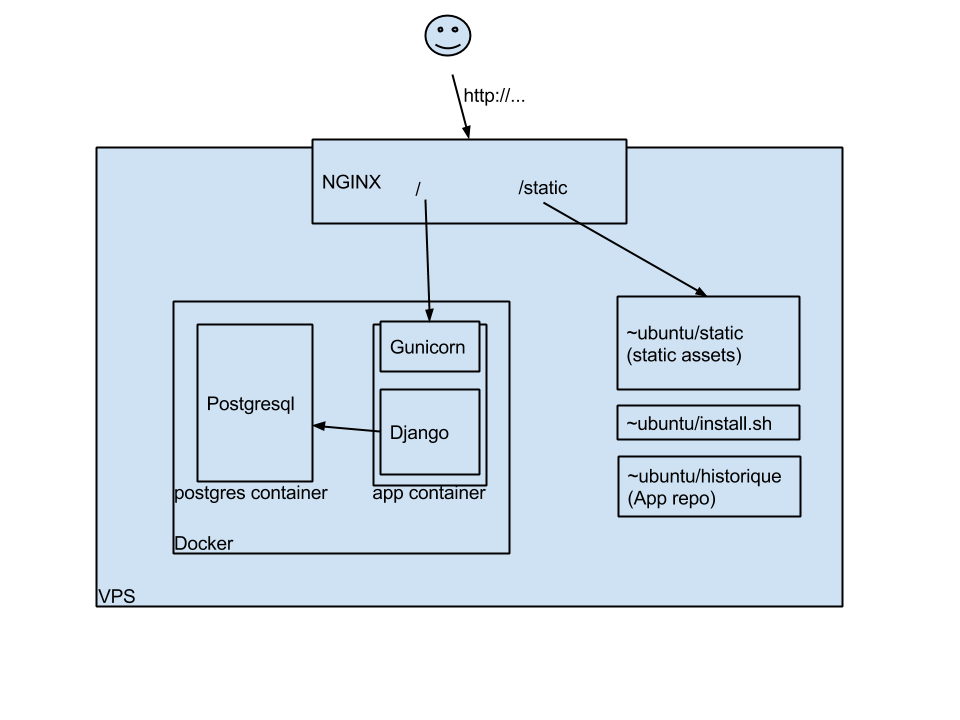

I've spend a few days looking at Docker and trying to 'dockerize' a Django application. It's not been easy, so I thought I'd publish some notes for people who may run into the same problems.
In short, I don't think that for a simple web app, Docker is worth using. However it's definitely good for complex apps that have many components, or to deploy multiple instances of an app on a single host (eg, all the instances of wordpress running on wordpress.com). Moreover, some of Docker's idiosyncracies make it hard to start using it quickly, and I hope the hints below will help.
A real production app would be more complex: the database should probably run in a different VM (or on RDS), and static files would go to a CDN, or on S3. Which, in fact, reduces even more Docker's usefulness here as you'd end up with docker running only your django app in a single container.
when dockerized:
Using Docker indeed makes things a bit more complicated, especially as:
docker run --name database -e POSTGRES_PASSWORD=foobad -d postgresBut to be fair, the same could be done with five lines in a shell script.
A copy of The install.sh script is copied on the virtual host and run as root. When it's finished running, everything is ready and running. What the script does:
The main point of this post is to provide help if you want to use Docker. So here are some tips.
docker images --filter "dangling=true" -q | xargs docker rmi) lest they fill out your disk.RUN rm /bin/sh && ln -s /bin/bash /bin/sh
docker run -t in order to allocate a terminal to see what's going on, it'll hang at the next to last command, or when an interactive command is reached. Using -i solves that. Why isn't -i the default is odd.exec and logs commands is required.gunicorn -b 0.0.0.0:8000 app.wsgi
--noinput flag is needed, which has the unfortunate consequence that setting the admin password needs to be done in a separate script, used as:
./manage.py createsuperuser --noinput --username=admin --email=a@b.com
python ./change-admin-password ${ADMIN_PASSWORD}
./manage.py collectstatic --noinput
collectstatic command.And that's all I can recall from a frustrating but informative week.